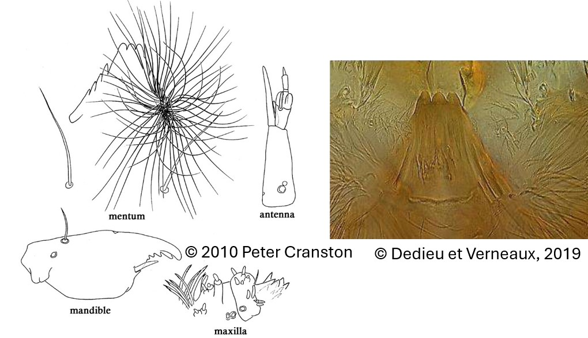

Parorthocladius nudipennis (Kieffer, 1908)

Antennes
Antenne à 5 segments; segment 2 élargit apicalement et segment 4 plus long que le 3. Lame subégale en longueur par rapport au flagelle. Organes Lauterborn grands, à peu près aussi long que le segment 3.
Mandibules
Dent apicale plus courte que la largeur combinée de 3 dents internes.
Mentum
Triangulaire. 3 dents médianes de taille égale formant l'apex et 4 paires de dents latérales inclinées. Barbe proéminente.
Labre
SI simple . SII simple. Peigne de l’épipharynx composée de 3 écailles.
Prémandibules
Prémandibules simples.
Ecologie
Les larves sont plutôt rares dans le sédiment des lacs. Elles sont plus dans les petits ruisseaux et les petits étangs et bassines.
Espèces recensées en France
1 : Parorthocladius nudipennis